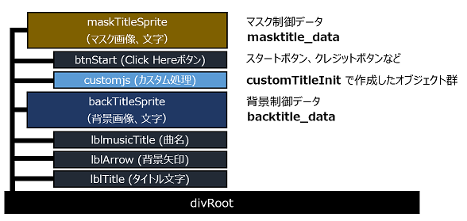
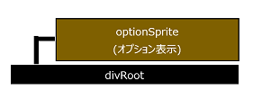
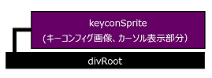
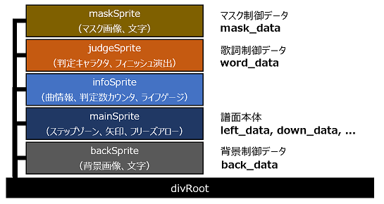
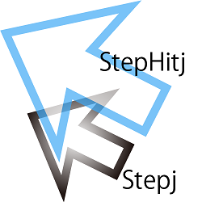
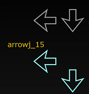
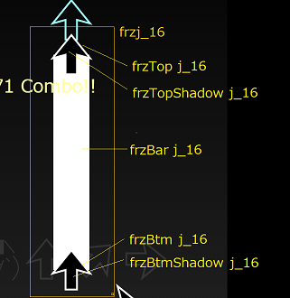
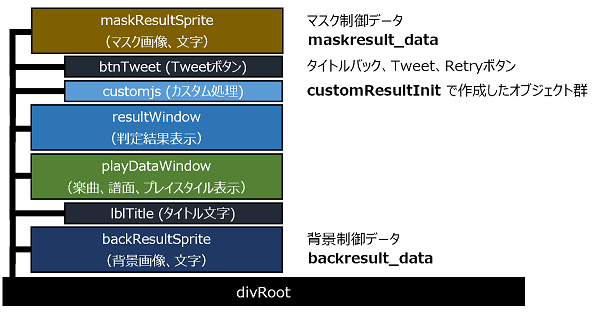

Dancing☆Onigiri(CW Edition)ソースでは、
基本的にJavaScriptでDOMと呼ばれるオブジェクト構成を操作しています。
いくつかコアとなるオブジェクト(スプライト)があるので、
それを押さえることでイメージがつきやすくなるかもしれません。
例えばソース内において、全てのオブジェクトは「divRoot」という
1つのオブジェクト(スプライト)の上に乗っているので、
「divRoot」上のオブジェクトを全て消せば、画面をクリアしたこととほぼ同じです。
(関数で言うと、clearWindow()が同じことをやっています)

「divRoot」というオブジェクトの上に、タイトル・背景矢印・曲名があり、
その上に背景モーションが入ります。
ボタンを隠したい場合、その上のマスクモーションを使用します。
主なボタン
| ボタン | 機能 |
|---|---|
| Click Here! | 設定・オプション画面へ移行します。 |
| Maker:XXX | 製作者のページへリンクします。(別窓) |
| Artist:XXX | アーティストさんのページへリンクします。(別窓) |
| ©2018 ティックル, CW Ver... | このGitHubのページへリンクします。(別窓) |

「divRoot」の上の階層の「optionSprite」が出てきました。
「optionSprite」上には、Difficultyなどの設定項目や、それに対応するボタンが乗っかります。
オプション表示項目だけデザインを変える、といったことができるようになっています。
主なボタン
| ボタン | 機能 |
|---|---|
| Back | タイトル画面へ戻ります。 |
| KeyConfig | キーコンフィグ画面へ移動します。 |
| Play | 今の設定でゲームを開始します。 |

設定・オプション画面と構成は同じです。
サンプルとなるステップゾーンやカーソルが上の階層である「keyconSprite」に乗っています。
主なボタン
| ボタン | 機能 |
|---|---|
| Back | 設定・オプション画面へ戻ります。 |
| PtnChange | 同一キーで別パターンがある場合、それを表示します。 |
| Reset | キーの割り当てを元の状態に戻します。 |
ここもタイトルと同じです。
ただし、ここは計算が終わるとすぐにメイン画面に飛んでしまうため、
画面としての位置づけは無いに等しいです。

画面内で最もDOMを使っている箇所です。
backSprite/mainSprite/infoSprite/judgeSprite/maskSpriteは上下関係があり、
mainSpriteの中で作られたオブジェクトはinfoSpriteのいずれのオブジェクトよりも
上に来ることはありません。
これを利用して、infoSprite上に前面に表示したいオブジェクトを置くこともできます。
また、これらのオブジェクトは独立しているため、
それぞれの位置・座標を変えたり、
そのオブジェクトだけアルファを掛けるといったことができます。

ステップゾーンは本体(stepj)と矢印がヒットしたときのモーション(stepHitj)の2つの組み合わせで構成されています。
(jは矢印番号で、左から右、上から下の順で0から順に数字が割り振られます。)
ヒットモーション(stepHitj)は普段は隠れていますが、矢印とステップゾーンが重なったときに表示されます。

矢印は単純に1つのオブジェクト(arrowj_k)のみです。
jは矢印番号、kはその矢印が何番目の矢印かを表します。

フリーズアローは開始矢印(本体・塗り）、帯、終了矢印（本体・塗り）で構成されます。
ヒット時（押しっぱなし時）は開始矢印（本体）が隠れ、開始矢印（塗り）が白色に変化します。

タイトル画面と構成はほぼ同じです。
主なボタン
| ボタン | 機能 |
|---|---|
| Back | タイトル画面へ戻ります。 |
| Tweet | 結果内容をTwitter用に加工して、ツイート画面を表示します。 |
| Retry | もう一度同じ設定でプレイします。 |